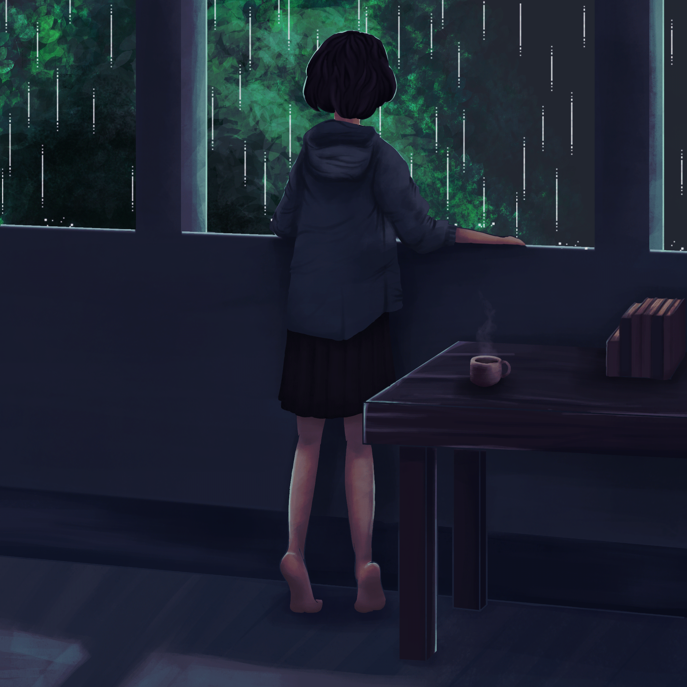

<!DOCTYPE html>
<html>
<head>
  <title>ABOUT</title>
</head>
<body>

<body style="background-color:#E89AFC; background-image: url(images/11.jpg)">

</body>
</html>

<h1> <a style="font-family:Lucida Console; color: white;"> WELCOME  TO  MY  PERSONAL  WEBSITE <a></h1>
<p style= "font-family:Lucida Console; color:white;"> A little bit about my life, Hope you enjoy it !</p>

<style>
.button {
  display: inline-block;
  border-radius: 4px;
  background-color: white ;
  border: none;
  color: black;
  text-align: center;
  font-size: 15px;
  padding: 10px;
  width: 150px;
  transition: all 0.5s;
  cursor: pointer;
  margin: 5px;
}

.button span {
  cursor: pointer;
  display: inline-block;
  position: relative;
  transition: 0.5s;
}

.button span:after {
  content: '\00bb';
  position: absolute;
  opacity: 0;
  top: 0;
  right: -20px;
  transition: 0.5s;
}

.button:hover span {
  padding-right: 25px;
}

.button:hover span:after {
  opacity: 1;
  right: 0;
}
</style>
</head>
<body>

<a href="homepage.html"> <button class="button" style="vertical-align:middle;"> <span> HOMEPAGE </span></button>
<a href="about.html"> <button class="button" style="vertical-align:middle;"> <span> ABOUT </span></button>
<a href="Experiences.html"> <button class="button" style="vertical-align:middle;"> <span> EXPERIENCES </span></button>
<a href="education.html"> <button class="button" style="vertical-align:middle;"> <span> EDUCATION </span></button>
<a href="family.html"> <button class="button" style="vertical-align:middle;"> <span> FAMILY </span></button>
<a href="gallery.html"> <button class="button" style="vertical-align:middle;"> <span> GALLERY </span></button>
<a href="contact.html"><button class="button" style="vertical-align:middle;"> <span> CONTACT </span></button>
</body>
</html>
<body>

<style>
img {
  float: left;
}
</style>
</head>
<body>


<p> <mark> <a style="background-color: #676268 ; color: white ; font-size: 15px; text-align: center; font-family: lucida Console"> "An ordinary girl with a lot of objective, may all of her dreams comes true"  </p></mark>

<p>

<a style="color:black; font-size: 44px ;font-family: lucida handwriting "> Atiya Shuhaimi </a> </p>

<p><mark><a style="text-align:center;text-align:justify;font-family:optima; color: black ; background-color: #DE9370;" > My name is Fatihah Balqis bt Shuhaimi @ Mohd Nasir and people usually called me Tiyaa.I'm 20 years old and I was born in Hospital Besar Kota Bharu, Kelantan on 9 September 2020. Currently, I am studied at UiTM Machang in Diploma in Information Management. I am cheerful and cheeky person, I loved to making jokes with my friends. My friends always call me as a naughty and happy go lucky person. I had six siblings and I am the youngest in my family. </mark></p> </p>

<p><mark><a style="text-align:center;text-align:justify;font-family:optima; color: black ; background-color: #DE9370;" > During on my free time, I like to listening music on YouTube and this had became my routine everyday. I listen to music during day and night and almost all songs in my playlist are breakup song, i am really enjoying sad and slow vibes music. I think this type of song suit my taste the most. My favourite artist is Moon Joo Won. He is actor, model and singer from South Korea and I had watched and listen all of his song. He is tall, fair skin and handsome.I loved to eat anything but my fav food is Tomyam, I loved anything about tomyam such as Tomyam Fried Rice, "bihun tomyam" and many more. </mark></p> </p>

<p><mark><a style="text-align:center;text-align:justify;font-family:optima; color: black ; background-color: #DE9370;" > Besides that, always go to food hunting around Kelantan with my bestfriend, we always trying new cafe each time hang out together. If it delicious enough, then we will repeat for the next time. We spend most of the time during holiday together. We do all of kind stupid things together, we sings, dancing and playing together until one of us become tired. However, sometimes we also had some bad days but it is okay because this is life, it has prons and cons. </mark></p> </p>
</p>

</body>
</html>
